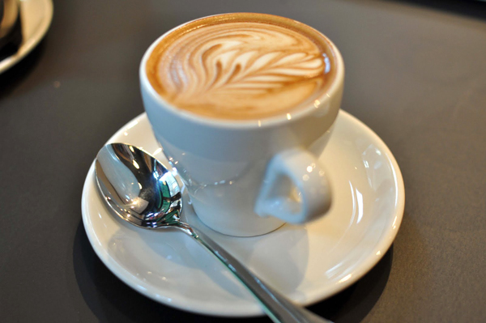
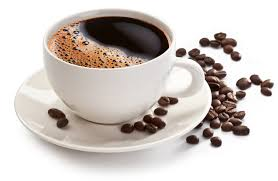
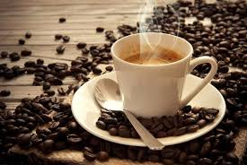
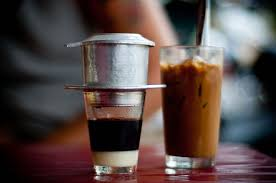

home page
ベトナムのドリンクについて
ベトナムはブラジルに続き世界第２位の生産量を誇るコーヒーの国。 コーヒーはもちろん、その他にもベトナムならではの飲み物が多く存在します。 特に暑いベトナムは水分と糖質を一緒に取れる、甘い飲み物が多く存在します。 カフェ文化が根付き、朝昼夜問わず、食事の後にカフェが主流で、安価な値段で楽しむことができます。 ベトナムのドリンクに来て飲んで見ましょう .    